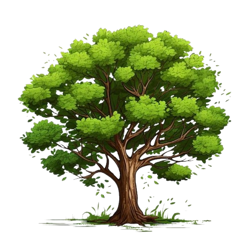
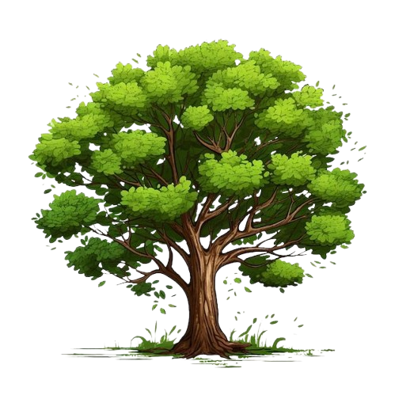

C

Q

E

X
C
Q
E
X

 

"Sabemos o que estamos fazendo. Confiemos uns nos outros e tudo ficará bem."
Por ter crescido em uma fazenda, Skye é naturalmente trabalhadora e parece querer influenciar suas colegas de equipe a serem iguais. Ela ministra aulas de marcenaria perto do refeitório do quartel-general para praticar a agilidade mental através da destreza manual, e aquelas que são flagradas matando aula têm que se juntar à sua corrida matinal, que começa às 4 da manhã.
Embora Skye tenha dito que não estava acostumada a trabalhar com outras pessoas antes de entrar para o VALORANT, ela rapidamente demonstrou ser uma excelente jogadora de equipe, guiando e lembrando seu time de se mover como uma unidade e trabalhar em conjunto para completar a missão. Com sua afinidade para sentir e perceber o mundo natural e tudo ao seu redor, Skye é naturalmente observadora e logo percebe algo incomum em seu ambiente.